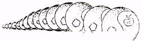
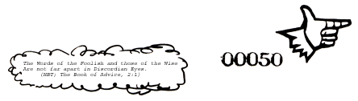

|
-2-
A culture is a group of people with rather similar grids. Through a window we view chaos, and relate it to the points on our grid, and thereby understand it. The ORDER is in the GRID. That is the Aneristic Principle.
Western philosophy is traditionally concerned with contrasting one grid with another grid, and amending grids in hopes of finding a perfect one that will account for all reality and will, hence, (say unenlightened westerners) be True. This is illusory; it is what we Erisians call the ANERISTIC ILLUSION. Some grids can be more useful than others, some more beautiful than others, some more pleasant than others, etc., but none can be more True than any other.
DISORDER is simply unrelated information viewed through some particular grid. But, like "relation", no-relation is a concept. Male, like female, is an idea about sex. To say that male-ness is "absence of female-ness", or vice versa, is a matter of definition and metaphysically arbitrary. The artificial concept of no-relation is the ERISTIC PRINCIPLE.
The belief that "order is true" and disorder is false or somehow wrong, is the Aneristic Illusion. To say the same of disorder, is the ERISTIC ILLUSION.
The point is that (little-t) truth is a matter of definition relative to the grid one is using at the moment, and that (capital-T) Truth, metaphysical reality, is irrelevant to grids entirely. Pick a grid, and through it some chaos appears ordered and some appears disordered. Pick another grid, and the same chaos will appear differently ordered and disordered.
Reality is the original Rorschach.
Verily! So much for all that.

|